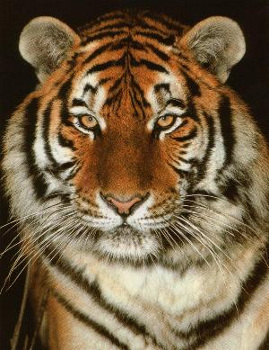

- HOME
- General
- Subdivision
- Looks
- Behaviour
- Senses
- Subspecies:
- Siberian tiger
- Bengal tiger
- Sumatran tiger
- Indochinese tiger
- South China tiger
- Caspian tiger
- Java tiger
- Bali tiger
- Hybrids:
- Liger
- Tigon
- Historisch:
- Saber tooth tiger
- Links


Relevant links:
- Nederlands
The Dutch version of Tijgeritorium.
Welcome on Tijgeritorium
Questions or remarks? WEBMASTER

NOTE FROM THE WEBMASTER:
This is a site about tigers.
I've tried to write as completely as possible about these magnificent animals.
But I want to point out that there's a subdivision in this species, almost only based on the area they live in.
You can find information about their common characteristics at the category 'General' in the navigationbar and about their differences on their respective individual pages.